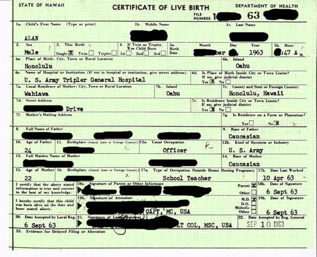
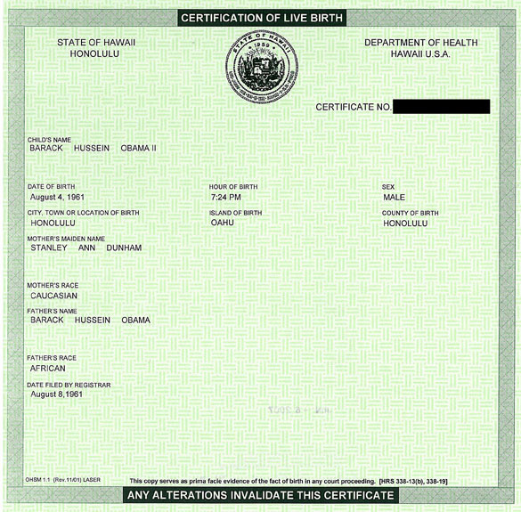

|
|
A arrogância da mentira Olavo de Carvalho
Os maiores jornais brasileiros vivem da exploração da boa-fé popular e não vão parar com isso enquanto não se sentirem ameaçados por uma onda de queixas à Delegacia do Consumidor. O único atenuante que podem alegar é que a maior parte das mentiras que sai nas suas páginas vem pronta do exterior. A contribuição nacional aí consiste apenas na abstenção de qualquer exame crítico das fontes, isto é, na recusa obstinada de praticar o dever número um do jornalismo. Isso é precisamente o que sucede no caso da matéria “Irritada, Casa Branca garante que Obama é cidadão americano”, publicada no Globo dia 27. Assinada por Ross Colvin, da Reuters, a agência mais pró-comunista do mundo Ocidental, não resiste ao mais mínimo confronto com os documentos originais que cita. É mentira do começo ao fim, coisa de um cinismo criminoso que nenhuma inépcia ou distração poderia explicar. Vejam: 1) “Um estridente grupo de teóricos da conspiração conhecido como ‘birthers’ (‘nascimentistas’) está transtornando a Casa Branca com sua persistente alegação de que Barack Obama não é cidadão norte-americano nato, e portanto seria inelegível para a Presidência.” Ninguém está transtornando a Casa Branca. A pergunta sobre a certidão de nascimento de Obama surgiu uma única vez nas conferências de imprensa da presidência, e mesmo assim não foi feita diretamente a Barack Obama, mas a seu porta-voz Robert Gibbs. Se a presidência americana se sente “transtornada” por isso, não é pelo assédio de cobranças, mas pelo conteúdo mesmo da pergunta, à qual não tem podido dar uma resposta satisfatória. A campanha não alega que Obama não é cidadão americano, mas apenas que ele não apresentou provas de sê-lo. Em vez disto, ele já gastou aproximadamente um milhão de dólares com advogados para esquivar-se de apresentá-las, conduta que seria inexplicável se ele tivesse as provas para apresentar. Aliás, por que rotular os membros da campanha logo de cara com expressões pejorativas, “birthers” e “teóricos da conspiração”, assumindo a rotulação como adequada, em vez de designá-los de maneira neutra e em seguida informar que seus adversários os chamam por esses pejorativos, como seria a prática normal do jornalismo? Colvin não age como jornalista, mas como relações públicas, mostrando que não está interessado em averiguar os fatos mas em atemorizar quem deseje investigá-los. 2) “Desde a campanha eleitoral de 2008 havia quem lançasse a suspeita de que Obama, primeiro presidente negro do país, teria nascido no Quênia, e não no Havaí.” Ninguém “lançou” essa suspeita. O que houve foi que a avó de Obama afirmou ter assistido pessoalmente ao nascimento dele num hospital de Mombasa. O repórter do WorldNetDaily, Jerome Corsi, enviado ao Quênia para averiguar o assunto, foi preso pelo governo local e deportado para os EUA. Diante disso, nenhuma suspeita precisa ser “lançada”: ela surge espontaneamente em qualquer cérebro normal. Mas a grande mídia assumiu como cláusula pétrea abster-se de noticiar ou investigar esses dois fatos, preferindo, em vez disso, chamar de “teóricos da conspiração” quem quer que os mencionasse mesmo sem tirar deles qualquer conclusão quanto à nacionalidade de Obama. 3) “A ‘certidão de nascido vivo’ de Obama, conforme a cópia divulgada na Internet, mostra que ele nasceu em Honolulu às 19h24 de 4 de agosto de 1961.” Colvin omite a informação básica de que a “certification of live birth” publicada no site de campanha de Obama não é um xerox, um arquivo computadorizado ou mesmo um traslado da sua certidão de nascimento original (‘birth certificate’), mas apenas um resumo enviado por internet, no qual faltam informações essenciais da certidão original, como o hospital de nascimento – dado que se torna tanto mais importante porque os mais fanáticos defensores de Obama se desmentem uns aos outros, citando dois hospitais diferentes. Durante a campanha eleitoral, o Congresso investigou minuciosamente a nacionalidade de John McCain, recusando-se a fazer o mesmo com Obama. McCain teve de apresentar a certidão de nascimento original (‘birth certificate’), enquanto Obama, livre de constrangimentos, se contentava com publicar o resumo eletrônico no seu site de campanha. 4) “A entidade apartidária FactCheck.org, ligada à Universidade da Pensilvânia, examinou, manipulou e fotografou a certidão original e concluiu que ‘atende a todos os requisitos do Departamento de Estado para conceder cidadania dos EUA’.” Mentira grossa. FactCheck não fotografou a certidão original, mas apenas a versão impressa do resumo eletrônico. A segunda parte da frase é pura desconversa. A Constituição Americana estabelece uma diferença entre “cidadão”, que é qualquer um nascido em território americano ou aceito como imigrante, e “cidadão nativo”, nascido em território americano de pai e mãe americanos, o que com toda a evidência não é o caso de Obama (seu pai, nascido no Quênia, era súdito britânico). A mesma Constituição determina que só os “cidadãos nativos” podem ocupar a Presidência. Há controvérsias quanto à interpretação deste ponto e elas podem ser usadas como argumento em favor de Obama, mas não tem sentido alegar ao mesmo tempo que há controvérsias e que a elegibilidade de Obama não é controvertida. 5) “O FactCheck.org também cita o fato de que os pais de Obama (ele queniano; ela norte-americana) colocaram um anúncio em um jornal local, em 13 de agosto de 1961, anunciando o nascimento do filho.” O anúncio não diz onde nasceu o menino; só informa que os Obamas tiveram um filho e que sua residência era na rua tal, número tanto, em Honolulu – informação que por si já é mentirosa porque na data do parto mamãe Obama morava e estudava em Seattle, a duas mil milhas de Honolulu. Colvin nem de longe menciona que a certidão original não é o único documento de Obama que continua inacessível. Desde o tempo em que era candidato, o atual presidente mantém sob estrito sigilo todos os papéis equivalentes aos que seu adversário teve de exibir ao Congresso: registros escolares, teses acadêmicas, exames médicos, passaportes (inclusive o misterioso passaporte, provavelmente indonésio, com que ele conseguiu entrar no Paquistão quando ali era proibida a entrada de americanos), etc. O único documento que veio à tona, além da malfadada “certification of live birth” e da matrícula numa escola indonésia, foi um alistamento militar obviamente forjado ou então miraculoso: assinado em 1988 num formulário que só veio a ser impresso em 2008. O que torna os documentos faltantes ainda mais necessários, e a sua ocultação ainda mais inaceitável, é o fato de que Obama tem mentido sobre sua biografia com a constância de um mitômano. Ele disse que nunca recebeu educação islâmica (os papéis da escola indonésia provam que recebeu), que nunca militou num partido socialista (logo apareceu a carteirinha), que seu pai foi pastor de cabras (nunca foi), que seu tio participou da libertação de Auschwitz (só se fosse soldado russo), etc. etc. Sua mais recente e primorosa lorota foi pronunciada na homenagem aos astronautas da Apolo-11: com a maior cara de pau, o homem disse que, como tantos outros havaianos emocionados, havia assistido pessoalmente à descida da cápsula espacial nas praias de Honolulu. O problema é que, nesse dia, ele estava na Indonésia. Para completar, a tropa-de-choque obamista, no desespero de desviar-se de perguntas irrespondíveis, tem recorrido aos argumentos mais incongruentes para dissuadir os curiosos. Por exemplo: funcionários do Registro Civil do Havaí asseguram que têm nos seus arquivos a certidão original de Obama (não a mostram nem informam o que está escrito lá), enquanto o presidente da CNN, tentando calar as perguntas do seu âncora Lou Dobbs, afirma que a questão está superada porque não existe mais certidão original – todos os arquivos do Registro Civil Havaiano foram destruídos em 2001. Tanto o nascimento de Obama quanto sua vida inteira são histórias mal contadas, repletas de absurdidades e contradições. O autoritarismo arrogante e cego com que o governo e a grande mídia exigem que um povo inteiro aceite essas histórias sem fazer perguntas, sob ameaça de ser acusado de extremismo de direita, já basta para mostrar que algo de muito grave – seja a nacionalidade, seja lá o que for – está sendo deliberadamente escondido. Que a mídia nacional faça eco servilmente a essa exigência arrogante, como se cada jornalista brasileiro fosse assessor de imprensa do presidente de uma nação estrangeira, é decerto um dos episódios mais deprimentes na vida de profissionais que já mostraram, no caso do Foro de São Paulo, sua disposição solícita de vender-se barato aos interesses políticos mais vis, a um conluio abjeto de ladrões, traficantes e assassinos.
P. S. Tão logo enviei este artigo ao DC, chegou a notícia de que a Sra. Chiome Fukino, a alta funcionária do Registro Civil havaiano que afirmara ter visto a certidão original de Obama nos arquivos da repartição, agora assegura que ele nasceu mesmo em Honolulu. Como antes ela se esquivava de dar essa informação porque a lei a proibia de revelar dados do documento sem autorização do próprio Obama, não se sabe se ela decidiu violar a lei ou se recebeu o sinal verde de Obama para falar. Nesta última hipótese, o caso fica mais nebuloso ainda: por que autorizar uma entrevista sobre o documento e continuar mantendo oculto o próprio documento? Quem, ao solicitar uma carteira de motorista, apresenta, em vez da certidão de nascimento, o testemunho de alguém que jura tê-la visto?
Veja com seus próprios olhos a diferença entre uma certidão de nascimento original e o resumo publicado por Obama.  
|

|

Home
- Informações - Textos
- Links
- E-mail